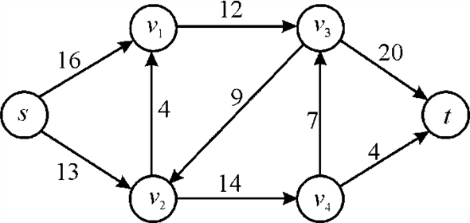
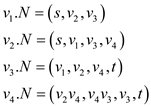
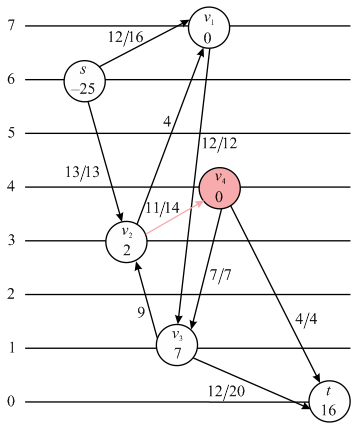
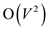
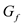
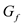

Flow Network
A flow network, in the most basic form, is a directed graph. Each of the edges has a capacity assigned to it. In the network a certain amount of flow goes from each edge of the network. There are certain nodes in the graph from which the flow starts and to which the flow ends. These two nodes are called the origin and destination of the network respectively.
In the diagram below the node s is the origin of the network and the node t is the destination or sink of the network. Each of the graph edge has a capacity. The capacity defines the data value that can go through that edge. The capacity is a positive integer forever for any edge. One more thing is that if an edge exists from a vertex v1 to vertex v2 than there can be no edge from v2 to v1.

In the above diagram vertex s is the source and the vertex t is the sink or destination. The capacity of each edge is shown alongside the edge. As the edge from s to v1 has the capacity of 16.
A flow network has various applications in practicality. It is used in data warehouses, scientific research and electricity distribution etc.
RELABEL TO FRONT ALGORITHM:
It is a special class of push re-label algorithms in which the near vertices and edges of a node is represented into a linked list. After representing them in linked list we use the discharge operation on them.
The relabel to front algorithm is used for computing maximum
flow from source to sink in a network. The distance of the source
vertex that is the vertex from where the flow is started is fixed
at  and the height of sink vertex is fixed at value 0.
and the height of sink vertex is fixed at value 0.
The height of all the other vertices through which the flow is passed to sink is initially set to 0 which increases with time.
The algorithm uses the operation INITIALIZE-PREFLOW in which the height and the excess flow for each vertex is set. It also initializes the flow for each edge in the network and the value of the flow for the edges adjacent to the source vertex is set.
The flow for the edges going from the source vertex is set to its maximum value that is equal to the capacity of the edge.
It has two major operations involved in it, PUSH and RELABEL.
PUSH  :
:
In the push operation the excess flow is pushed from one vertex to the other vertex. It is pushed from a vertex at higher level to a vertex at the lower level.
It may be possible that the flow in an edge from the lower level vertex to the higher level vertex is positive but the push operation will not support this type of flow. The conditions and the action that are performed in the push operation are as:
Precondition:
To perform a push operation two conditions must be fulfilled:
1. The vertex u is active or overflowing that is excess flow and the residual capacity.
2. The height of vertex u must be larger than the height
of vertex v that is 
 from vertex
u to vertex v. Refer the PUSH algorithm in the
section 26.4 before lemma 26.13 in book.
from vertex
u to vertex v. Refer the PUSH algorithm in the
section 26.4 before lemma 26.13 in book.RELABEL  :
:
The algorithm considers that the flow can be pushed only to the vertex, which is downhill from the sender vertex.
So, for any vertex u if there is an edge to the any vertex which is not saturated yet and they both are at the same level or at the same height then the height of the vertex is increased by one. That is the vertex u is relabeled and in the relabel operation the height of vertex u is updated as:
Precondition:
To perform a relabel operation two conditions must be fulfilled:
1. The vertex u is the active overflowing vertex that is

2. For all the vertices v in the residual network for
which there is an edge from vertex u to vertex v
there necessarily is .
.
 . Refer the
RELABEL algorithm in the section 26.4 after lemma 26.13 in
book.
. Refer the
RELABEL algorithm in the section 26.4 after lemma 26.13 in
book.RELABEL_TO_FRONT
// to set the initial values call the procedure Initialize PRE-FLOW
1. Initialize PRE-FLOW
// creating the list L
2. Initialize node list L containing in any order
// arrange all the nodes in linked list
3. for each
// set the value of current pointer
4.
// search for all adjacent nodes in neighbor
5.
// execute the while loop until the list L is empty
6. while
// set the old height for the active vertex
7. old-height
// call the discharge method
8. DISCHARGE
// check if there is any change in old height of active vertex
9. ifold-height then
// moving the vertex to the front of list
10. move u to the front of L
// move to forward in the list L
11.Consider the graph of the flow network  shown in the
figure below:
shown in the
figure below:

The vertexes here in the above figure are with the neighbor list as:

Execution of algorithm RELABEL-TO-FRONT for the above flow network:
1. First the Initialize PRE-FLOW (G, s) algorithm will execute. For the algorithm see the section 26.4 in the book. In this step the flow and over flow values for the network will be initialized. It will update the network, the execution of Initialize PRE-FLOW algorithm is as:
1. Initially the height and overflow value of all the nodes will be set to zero for all the vertices as:
2.
3.
4. The initial flow for each edge of network is set to zero as:
5. The height of the source vertex is set to number of vertices in the network
6.
7. For every vertex adjacent to the source vertex update the flow and overflow values:
The flow network after the execution of Initialize PRE-FLOW algorithm is as:
2. Now arrange the vertices of the network in a list in any order and the neighbor list of each vertex is associated with each vertex.
3. For each vertex which is not originating and destination vertex, update the present pointer to the first vertex in the neighbor list.
4. Select the head of the list L as the active vertex u
5. Execute the while loop until the list is empty:
6. Store the old height of active vertex in a temporary variable old-height
7. Call the Discharge procedure for the current active vertex.
For the algorithm DISCHARGE (u) see the section 26.5 from
the book. The execution of discharge algorithm for vertex  is as:
is as:
1. Execute the while loop until the overflow value for vertex
is
greater than zero that is
.
2. Put the value current neighbor value of in a
variable v

3. Check if the vertex is NIL, here it is not NIL so moves forward
4. Check if the residual capacity of edge is greater than zero
and height of is one more
than the height of s that is which is
false as
5. Both the above conditions are false so move forward the
current pointer of as
and repeat the discharge process.
8. Do this for the other members of neighbor list until the
condition for relabeling the active vertex is true. It will be true
when there is a nil in the next neighbor of when it is
true increase the height of the vertex as:
The updated flow network is as shown:
9. Now there is an edge from vertex to vertex
 for
which the condition satisfies
that is which is
greater than 0 and
for
which the condition satisfies
that is which is
greater than 0 and
Hence, the flow from vertex to vertex
will be
pushed by using algorithm PUSH (,). For the
PUSH algorithm refer the section 26.4 from the book.
10. The execution of PUSH (,) algorithm
is as:
The condition for the flow in step 1 and 2 are satisfied
1. Calculate the flow in the step 3 to be pushed as:
2. Now check if which is true in the step 4.
3. Then update the flow in the edge as in step 5 of algorithm.
4. Now update the overflow values for vertex and.
The updated flow network is as shown:
11. As the vertex is not
discharged yet and there is no vertex to which it can push the flow
so relabel the vertex toby
increasing its height.
The updated flow network is as:
12. Now push back the excess flow from the vertexto the
source vertex s. The flow network after the push back
process is as:
13. Now the overflow for the vertexis zero so
it is discharged, move the vertex to the front of the list L
as displayed in the box.
14. Select the next active vertex and relabel
it be increasing its height. The updated flow network after
relabeling vertex is
shown:
and relabel
it be increasing its height. The updated flow network after
relabeling vertex is
shown:
15. Push the excess flow from the vertexto the
vertex  the updated
network is as:
the updated
network is as:
16. Move the vertex to the front
of the list L, the moved vertex is shown in the box:
17. Now select the next to the vertexthat is
which is already discharged so move to the vertex next to it that
is.
Relabel the selected active vertex as:
18. Push the flow from the to the
vertex for which there is an edge from vertex that is
t. The flow network after the push operation is as:
19. Move the discharged vertex as shown in
the box below:
20. Now select and relabel the next vertex for which the excess
flow is greater than zero which is. The flow
network after the relabel operation is as:
21. Push the excess flow from the vertex to the
vertex for which its height is greater by 1. The updated flow
network after the push operation is as:
22. As the vertex is not
discharged yet so relabel by increasing its height. The flow
network after the relabel operation is as:
23. Push the flow back to the vertex as per the
PUSH algorithm the updated flow network after flow operation is
as:
24. Now the vertex is
discharged so move it to the front of list L as shown is the
box.
25. Again select and relabel the next vertex for which there is
an excess flow that vertex. The
updated network is as shown after the relabel operation:
26. Push the excess flow from the vertex to the
vertex in its downward direction. The updated flow network after
the PUSH operation is as shown:

27. Move the vertex to the
front of list L as shown:
28. Now select the next active vertex for which
the excess flow is greater than zero. As there is an edge
fromto which
satisfies the conditions of Push operation. Push the extra flow
from vertex to. The
updated network is as shown:
29. The vertex is not
discharged yet so relabel it. The flow network after the relabel
operation is as:
30. Push the excess flow from the vertex back to the
vertex. The
updated network is as shown:

31. Move the vertex to the front
of the list L as shown:
32. Again select and relabel the next vertex for which there is
an excess flow that is the vertex. The
updated network is as shown after the relabel operation:
33. Push the excess flow from the vertex to vertex
the push operation is as shown:
34. Again the vertex is
discharged so, move the vertex to the
front of list L as shown:
35. Now select the next active vertex for which
the excess flow is greater than zero. Relabel the vertex. The
updated network is as shown:
36. Push the excess flow from the vertex back to the
vertex . The
updated network is as shown:
37. Move the vertex to the front
of the list L as shown:
38. Select and relabel the next active vertex from the flow network.
39. Push the excess flow from the vertex to the
vertex s in its downward direction. The updated network is
as shown:
40. Again the vertex is
discharged so, move the vertex to the
front of list L as shown:
41. Select the next vertex with excess flow greater that zero
such a vertex is vertex. Push the
flow from that vertex to the vertex in its downward direction that
is the sink.
The updated network shown the push operation is as:
42. As the vertex is
discharged so, move it to the front of the list L.
Now, all the vertices except source and sink have excess flow zero so the process breaks here. The maximum flow of the network is 23 which is passed from the source vertex and reached to the sink in the network.
Implementation of push-relabel algorithm with first-in, first-out queue
The algorithm for push-relabel algorithm that uses the first in first out (FIFO) queue, to store overflow vertices is as follows:
Algorithm
// initializing the flow, of all the edges and the overflow and height of vertices
1. Initialize-Preflow
2. queue Q
// loop for considering each vertex of flow network
3. for all
// inserting the vertex to the front of queue
4. insert
// loop for discharging the vertices until the queue is empty
5. while ( empty (Q) != true )
// extract the front element from the queue and store it in variable head
6. head = extract (Q)
// discharge the vertex by passing the excess flow to neighbour vertices
7. DISCHARGE (head)
// checking if the vertex will flow afterward
8. if 
// move the head to the end of the queue
9. make head as the last element of Q
// deleting the head from the queue
10. delete (head)
11. end
Analysis:
• The above algorithm runs in two phases. First, it initializes
a FIFO queue; it is initialized by keeping all the vertices in the
queue list. It also initializes the flow for each edge in the
network. It considers each vertex only once. So the time for the
execution of Initialize- Pre-flow is constant for any network. This
is done in the lines 1-4. This operation takes  time.
time.
• The while loop in the line 5 of the above algorithm, each time
takes a vertex at head of the queue to discharge, until the Queue
is empty. Since, there are |V| vertices in the queue, the while
loop takes time.
• In the line 6, the first element of the queue is extracted and it is discharged. Refer section 26.5 in the book for the DISCHARGE algorithm.
• When the discharge operation is called, one of the three actions is performed. The three operations are relabel, push, and advancing the current pointer to its next neighbour. This method takes total of time.
• If the push operation is applied, it discharges the excess flow to its neighbour. Each time the network is updated.
• Once the vertex is discharged, in the lines 8-9, the algorithm
checks the other vertices that whether they are overflowed after
discharge operation. If any vertex is overflowed, the particular
vertex is placed at the end of the queue. Each time this operation
takes time. Since
this operation is done V time, the total running time for this
operation is .
• In the line, the algorithm removes the vertex from the queue. The algorithm terminates when the queue becomes empty.
Thus the total time taken by the algorithm is, which is equal to.
Hence, the running time of the PUSH-RELABEL algorithm by using FIFO queue is .
Generic PUSH-RELABEL algorithm:
The generic push relabel algorithm is used for computing maximum
flow from source to sink in a network. Initially, the height of the
source vertex is set to and the
height of all other vertices, including sink is set to 0. This is
done in the INITIALIZE-PREFLOW method. It also initializes the flow
for each edge in the network. Now, the push-relabel algorithm takes
an over-flowed vertex, and applies push or relabel operation on
this vertex.
A node  is
re-labelled, if there is no possibility to push flow fromto any
neighbouring vertex v. Then the relabel method increases the
height of the vertex using the
following formula.
is
re-labelled, if there is no possibility to push flow fromto any
neighbouring vertex v. Then the relabel method increases the
height of the vertex using the
following formula.
.
The algorithm still works , even the method RELABEL updates the height of the vertex using the following formula:
The modified algorithm with the new height update formula is as follows:
h= labeling
p=path
// initialize the labelling
1. and for
all
for
all
// initialize pre-flow with its respective capacity
2.  forand
forand
 for
all other edges
for
all other edges
3. while with
 do
do
4. if residual
edge in  and
residual
edge in  and
 then
then
// comparing the label in given graph
5. if is forward
then
// push it forward
6. increase by min
by min

7. if is backward
then
// push it backward
8. decrease by min

// re-labelled node
9. else
10. return f
Effect on analysis:
Even though the height is increasing by 1 each time, according
to Lemma26.19,26.20 and corollary 26.21,  vertices
are relabelled at most times. That
is, the number of relabel operations is same as . So, the
above change in the height increasing method, merely affects the
efficiency of the RELABEL-TO-FRONT algorithm.
vertices
are relabelled at most times. That
is, the number of relabel operations is same as . So, the
above change in the height increasing method, merely affects the
efficiency of the RELABEL-TO-FRONT algorithm.
The discharge method
The method DISCHARGE is used to discharge the excess flow from the vertices of the network by using PUSH and RELABEL algorithms. DISCHARGE pushes the excess flow of a vertex, till its excess flow becomes zero. When a vertex is discharged to zero, the next vertex is processed.
The discharge method is as follows:
DISCHARGE ( u )
// Check if the excess flow of the vertex is greater than zero.
1. while
// store the value of current vertex of u in a variable v
2.
// Check if the vertex v is NIL
3. if
// Relabel the vertex u by increasing its height.
4. RELABEL (u)
// update the present vertex of u
5.
// Check if there is a neighbouring vertex of u in downward direction for which
// residual capacity of joining edge is greater than zero.
6. else ifand
// Push the excess flow from vertex u to vertex v
7. PUSH (u, v)
// Update the current vertex of u
8. else
Modified push-relabel method:
Generally, each time the push-relabel method selects a overflow vertex arbitrarily from the list of vertices and discharges it. Thus it runs in time. Now, the modified push-relabel algorithm that selects the highest overflowing vertex each time is as follows:
The Push-relabel method:
// Creating a list which contains all the vertices other than source and sink.
1. insert each vertex in a list
// execute the while loop till all the vertices are processed.
2. while (list is not empty)
// find the vertex which has highest overflow value
3. vertex=find (highest overflowing vertex)
// call the discharge procedure and then update the list
4. DISCHARGE (vertex)
5. end
The above algorithm finds the highest overflowing vertex in the list and discharges it. If the vertex is discharged successfully, it is removed from the list. The algorithm terminates when the list becomes empty.
Analysis of the algorithm:
• In the above algorithm, the ‘while’ loop in the line 2 iterates for V times, since the number of vertices in the network is V.
• The inner loop or the loop in the line 3 executes for the number of times of vertices in the network. The find method in line 3 takes O(|V|) time to find the highest overflowing vertex. The discharge method in the line 4, runs in the time of O(|V|2).
• In the worst case scenario, all the |V| vertices are discharged. In this case, there are maximum non saturating push operations.
• So, the operations performed in the line numbers 2, 3 and 4, results in the complexity of the above algorithm as .
Hence, the overall complexity of the above algorithm can be written as in case when there is the discharge of maximum overflowing vertex.
GAP LABELING HEURISTIC:
The gap relabeling heuristic renovates the labeling positions of the vertices that cannot reach to the sink. Thus the updated labels do not have any link with the sink.
If there exists a height (k) in the network at which no nodes are found, then gap heuristics detects the nodes that have a height above the k and are relabeled to position equal to the number of nodes in the network plus one. That is, the gap heuristics improves the actual performance by relabeling the nodes that are disconnected from the sink (t).
For example:
Consider the graph in which no vertices exist at the label c and the minimum cut exists at this point.
• According to gap relabeling heuristics, the nodes at the above c are moved to the height of the source or above the height of the source.
• Now, consider an integer, so that no vertex has the height k . Then the gap labeling heuristic puts such node on the side of source.
• As the label of the sink is always zero, its label does not
reach any of the labels of the vertices. Thus the labels of
remaining vertices can be increased to. By
updating the labels of vertices. In this way, it is possible to
eradicate the inefficient vertices from pushing flow to the
sink.
• The above work brings each vertex that satisfies the condition to the side of the source in the minimum cut.
Proving that h is a height function:
Using the principle of induction, that is by applying induction on the number of basic operations, h can be proved as a height function.
ASSUMPTION:
If h is taken as a height function, then the operation Relabel proves that h is a height function.
1.
The Relabel operation on confirms that afterward.
2.
Similarly,
Hence, the attribute h is a height function.